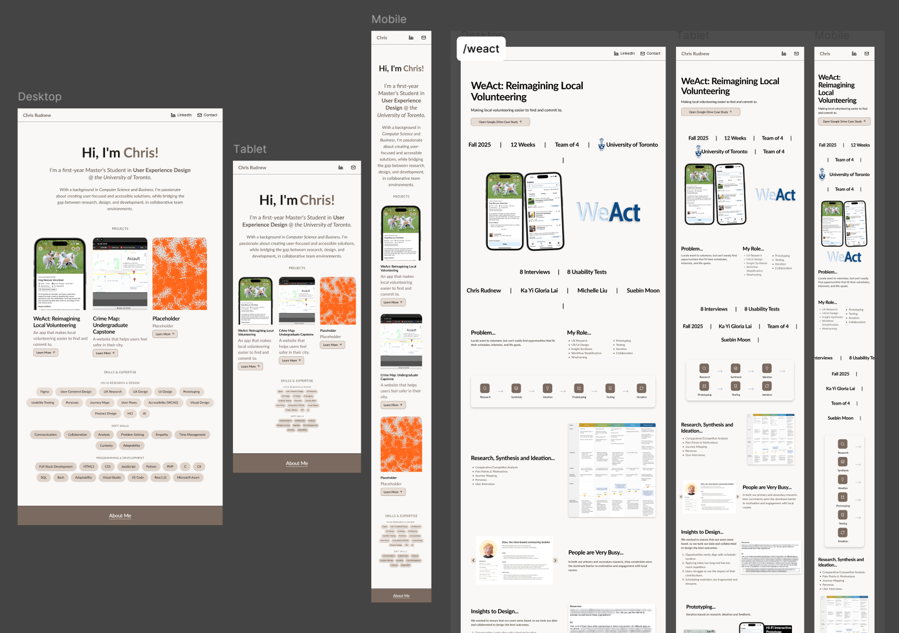
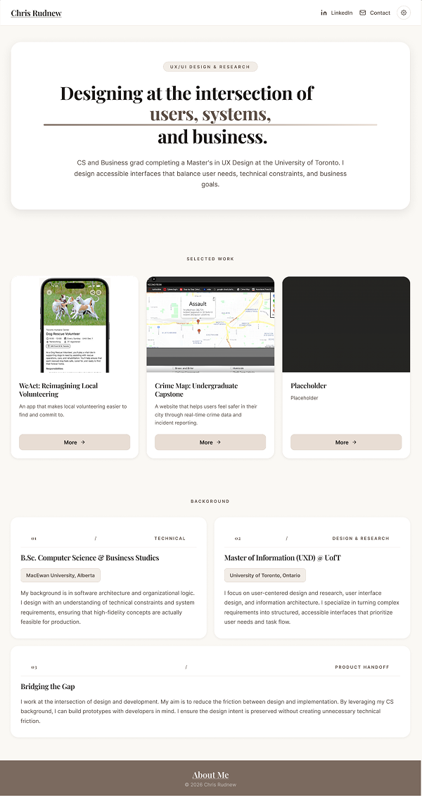
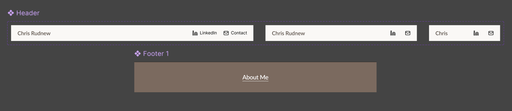
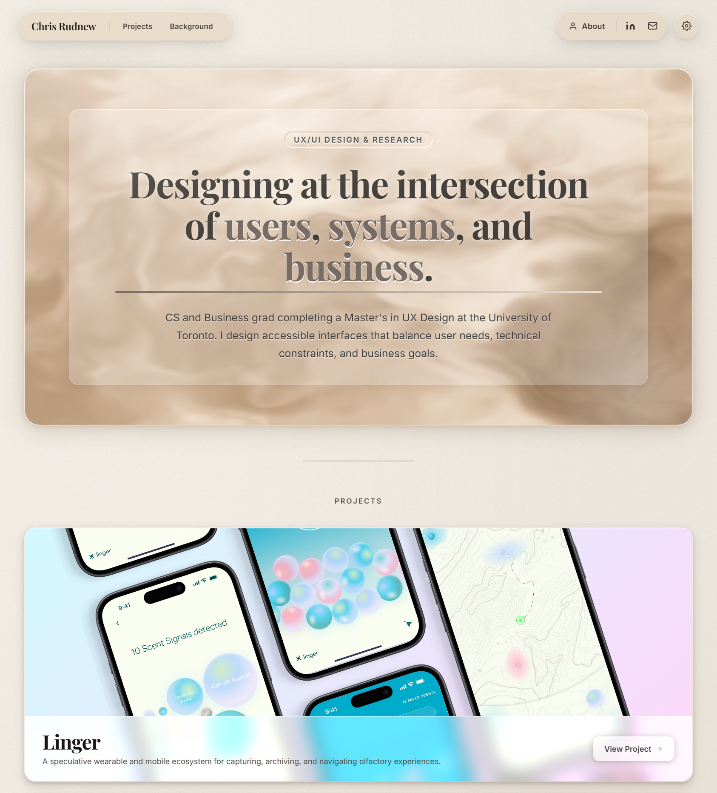
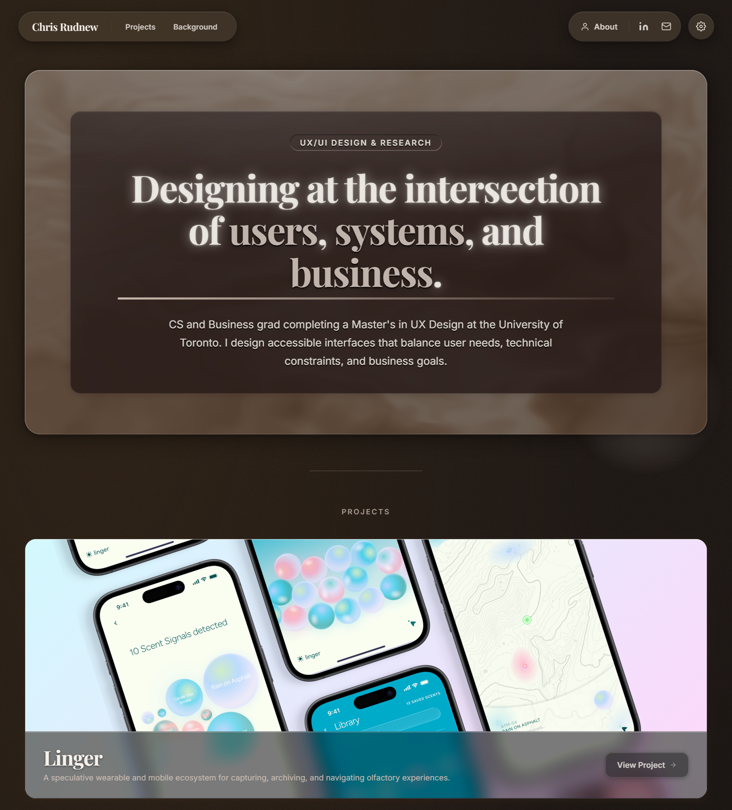
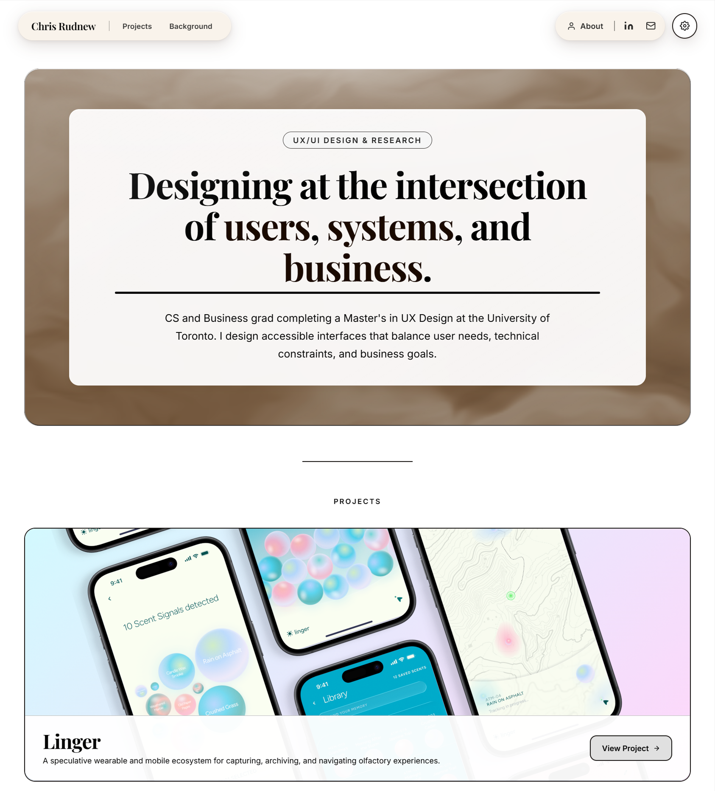
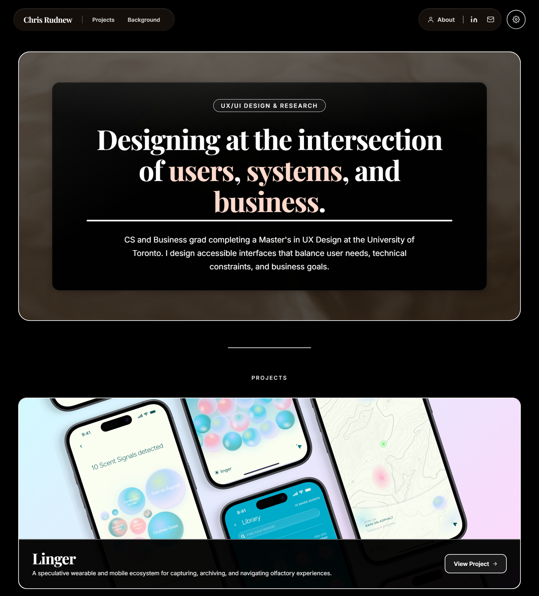

Portfolio
AI-Assisted Portfolio
DESIGNED IN FIGMA · BUILT WITH CLAUDE
This site, built end-to-end using Figma, Claude Code, and MCP.
Old craft.
New tools.
AI has become more and more prominent in the industry, and I wanted to understand it firsthand rather than wait for it to become standard practice. Currently, no one truly knows how the industry will look once AI is fully implemented, so staying on top of modern workflows and always adapting, is key.
Luckily I enjoy the learning process, so I find it challenging and fun.
I'm completing a Master's in UX Design at the University of Toronto, and I have a BSc in Computer Science. This combination puts me in a unique position to excel with these new tools as a designer who understands how things are built.
A few people I spoke with in the industry confirmed what I already suspected: picking up these workflows now, before they're everywhere, is worth the time.
Starting in
Figma Sites.
Figma Sites is where I started my portfolio creation process. I could create my designs in Figma, and seamlessly transfer them into Figma Sites. Unfortunately, I kept on encountering limitations in it. Anything more ambitious, like the animated hero card on the homepage, wasn't really achievable there.


Design to code.
No handoff.
In late February 2026, Anthropic and Figma announced MCP integration. A direct connection between Figma design files and Claude Code. For someone at the intersection of UX design and computer science, it was impossible to ignore.
Design in Figma
Layouts, components, and visual decisions made in Figma first, from my Figma Sites work. Used as source of truth for structure and intent.
Connect via MCP
Claude reads Figma frames, layers, and styles directly through the MCP server. No exporting, no manual handoff.
Refine with Claude
Iterating on layout, animations, and accessibility at localhost. Claude as a pair programmer.
Push to GitHub Pages
Version control and deployment handled directly through Claude Code.

AI-assisted.
Still hands-on.
Token usage is a real constraint. Every prompt costs context, so being vague burns through it fast. I learned to come in with clear direction and correct early rather than late.
The bigger challenge was consistency. At first, Claude would implement the accessibility features that I wanted correctly, but then when I redesigned a section or added a new page, those same features sometimes didn't carry over properly. That meant staying active in manual testing and keeping my debugging specific.
My CS background helped. Understanding how HTML, CSS, and JavaScript interact, knowing libraries like GSAP, and being comfortable with Git meant I could diagnose issues quickly and keep prompts focused. One pattern I kept catching: Claude writing new logic for something that already existed in a shared file. Knowing when to just fix something directly, rather than prompt for it, turned out to be its own skill.
Built for everyone.
Dark mode, high contrast, and reduced motion (with more still to come, like reduced transparency). These were part of the plan, not added at the end. I ran WCAG checks, implemented system-wide preference detection, and made sure the controls are reachable from any page. If you're building something and have the ability to make it more usable, it seems like the obvious call.




The design decisions on this portfolio are mine. I brought my design and developer knowledge, and Claude helped build it.
The difference between AI-assisted and AI-generated is who's making the calls. The design judgment and everything about what this site needed to communicate, came from me.
Skills Applied
UI Design · UX Research · Front-End Development · AI-Assisted Workflow · Figma MCP · Accessibility (WCAG) · Version Control · GitHub Pages · Iterative Design